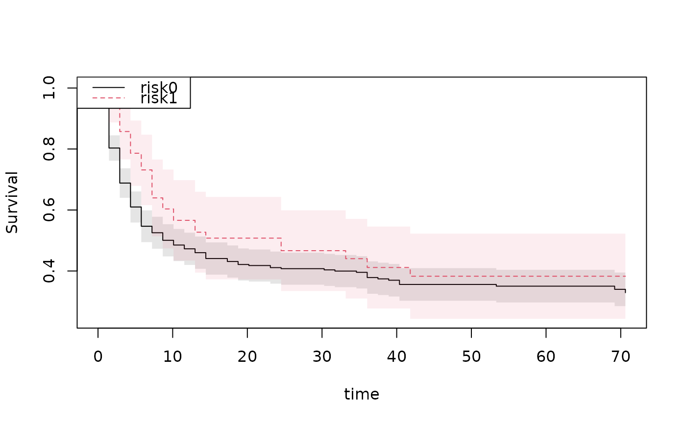

Computes the G-estimator (G-formula) for standardized survival or cumulative incidence estimates: $$ \hat S(t, A=a) = n^{-1} \sum_i \hat S(t, A=a, Z_i) $$
Usage
survivalG(
x,
data,
time = NULL,
Avalues = NULL,
varname = NULL,
same.data = TRUE,
First = FALSE
)Arguments
- x
Object of class
"phreg"or"cifreg".- data
Data frame for risk averaging. Must be part of the data used for fitting unless
same.data=FALSE.- time
Time point for estimation.
- Avalues
Values to compare for the first covariate \(A\).
- varname
Name of the variable to be treated as the treatment/exposure variable (default is the first variable).
- same.data
Logical; assumes the same data is used for fitting and averaging.
- First
Logical; if
TRUE, uses only the first record for G-averaging (useful for start-stop structures).
Value
An object of class "survivalG" containing:
- risk
Standardized risk estimates.
- risk.iid
Influence functions for the risk estimates.
- difference
Pairwise differences in risks.
- ratio
Risk ratios.
- survival.ratio
Survival ratios (for
phreg).- survival.difference
Survival differences (for
phreg).
Details
Based on a phreg or cifreg object. Provides influence functions for these risk estimates,
allowing for standard error computation.
If the first covariate is a factor, contrasts between all levels are computed automatically.
If it is continuous, specific values must be provided via Avalues.
Examples
data(bmt)
bmt$time <- bmt$time + runif(408) * 0.001
bmt$event <- (bmt$cause != 0) * 1
bmt$id <- 1:408
dfactor(bmt) <- tcell.f ~ tcell
# Fine-Gray model
fg1 <- cifreg(Event(time, cause) ~ tcell.f + platelet + age, bmt,
cause = 1, cox.prep = TRUE, propodds = NULL)
summary(survivalG(fg1, bmt, 50))
#> G-estimator :
#> Estimate Std.Err 2.5% 97.5% P-value
#> risk0 0.4332 0.02750 0.3793 0.4871 6.349e-56
#> risk1 0.2726 0.05861 0.1577 0.3875 3.297e-06
#>
#> Average Treatment effect: difference (G-estimator) :
#> Estimate Std.Err 2.5% 97.5% P-value
#> ps0 -0.1606 0.0635 -0.285 -0.03611 0.01145
#>
#> Average Treatment effect: ratio (G-estimator) :
#> log-ratio:
#> Estimate Std.Err 2.5% 97.5% P-value
#> ps0 -0.4631328 0.2211563 -0.8965913 -0.02967436 0.03624731
#> ratio:
#> Estimate 2.5% 97.5%
#> 0.6293090 0.4079579 0.9707616
#>
# Cox model
ss <- phreg(Surv(time, event) ~ tcell.f + platelet + age, bmt)
summary(survivalG(ss, bmt, 50))
#> G-estimator :
#> Estimate Std.Err 2.5% 97.5% P-value
#> risk0 0.6539 0.02708 0.6008 0.7070 8.771e-129
#> risk1 0.5639 0.05971 0.4469 0.6809 3.579e-21
#>
#> Average Treatment effect: difference (G-estimator) :
#> Estimate Std.Err 2.5% 97.5% P-value
#> ps0 -0.09 0.06291 -0.2133 0.0333 0.1525
#>
#> Average Treatment effect: ratio (G-estimator) :
#> log-ratio:
#> Estimate Std.Err 2.5% 97.5% P-value
#> ps0 -0.1480738 0.1095493 -0.3627866 0.06663895 0.1764831
#> ratio:
#> Estimate 2.5% 97.5%
#> 0.8623675 0.6957349 1.0689095
#>
#> Average Treatment effect: survival-difference (G-estimator) :
#> Estimate Std.Err 2.5% 97.5% P-value
#> ps0 0.08999732 0.06290582 -0.03329583 0.2132905 0.1525255
#>
#> Average Treatment effect: 1-G (survival)-ratio (G-estimator) :
#> log-ratio:
#> Estimate Std.Err 2.5% 97.5% P-value
#> ps0 0.2311351 0.1503551 -0.06355556 0.5258258 0.1242294
#> ratio:
#> Estimate 2.5% 97.5%
#> 1.260029 0.938422 1.691855
#>
# Stratified Cox model
ss <- phreg(Surv(time, event) ~ strata(tcell.f) + platelet + age, bmt)
summary(survivalG(ss, bmt, 50))
#> G-estimator :
#> Estimate Std.Err 2.5% 97.5% P-value
#> risk0 0.6441 0.02727 0.5906 0.6975 2.434e-123
#> risk1 0.6172 0.07125 0.4775 0.7568 4.635e-18
#>
#> Average Treatment effect: difference (G-estimator) :
#> Estimate Std.Err 2.5% 97.5% P-value
#> ps0 -0.02693 0.07622 -0.1763 0.1225 0.7238
#>
#> Average Treatment effect: ratio (G-estimator) :
#> log-ratio:
#> Estimate Std.Err 2.5% 97.5% P-value
#> ps0 -0.04271539 0.1228586 -0.2835139 0.1980831 0.7280812
#> ratio:
#> Estimate 2.5% 97.5%
#> 0.9581841 0.7531327 1.2190637
#>
#> Average Treatment effect: survival-difference (G-estimator) :
#> Estimate Std.Err 2.5% 97.5% P-value
#> ps0 0.02693334 0.07622097 -0.122457 0.1763237 0.7238196
#>
#> Average Treatment effect: 1-G (survival)-ratio (G-estimator) :
#> log-ratio:
#> Estimate Std.Err 2.5% 97.5% P-value
#> ps0 0.07294849 0.2010713 -0.321144 0.467041 0.716755
#> ratio:
#> Estimate 2.5% 97.5%
#> 1.0756751 0.7253188 1.5952668
#>
# Time-varying G-estimates
sst <- survivalGtime(ss, bmt, n = 50)
#> Warning: NaNs produced
#> Warning: NaNs produced
#> Warning: NaNs produced
#> Warning: NaNs produced
plot(sst)

# Among treated (specify id to link influence functions)
ss <- phreg(Surv(time, event) ~ tcell.f + platelet + age + cluster(id), bmt)
summary(survivalG(ss, subset(bmt, tcell == 1), 50))
#> G-estimator :
#> Estimate Std.Err 2.5% 97.5% P-value
#> risk0 0.6663 0.03407 0.5995 0.7331 3.588e-85
#> risk1 0.5749 0.05748 0.4622 0.6875 1.511e-23
#>
#> Average Treatment effect: difference (G-estimator) :
#> Estimate Std.Err 2.5% 97.5% P-value
#> ps0 -0.09142 0.06416 -0.2172 0.03434 0.1542
#>
#> Average Treatment effect: ratio (G-estimator) :
#> log-ratio:
#> Estimate Std.Err 2.5% 97.5% P-value
#> ps0 -0.147582 0.1081855 -0.3596217 0.06445766 0.1725181
#> ratio:
#> Estimate 2.5% 97.5%
#> 0.8627917 0.6979403 1.0665804
#>
#> Average Treatment effect: survival-difference (G-estimator) :
#> Estimate Std.Err 2.5% 97.5% P-value
#> ps0 0.09142262 0.06416389 -0.0343363 0.2171815 0.1542064
#>
#> Average Treatment effect: 1-G (survival)-ratio (G-estimator) :
#> log-ratio:
#> Estimate Std.Err 2.5% 97.5% P-value
#> ps0 0.2421385 0.1620315 -0.0754374 0.5597144 0.1350733
#> ratio:
#> Estimate 2.5% 97.5%
#> 1.2739707 0.9273378 1.7501727
#>